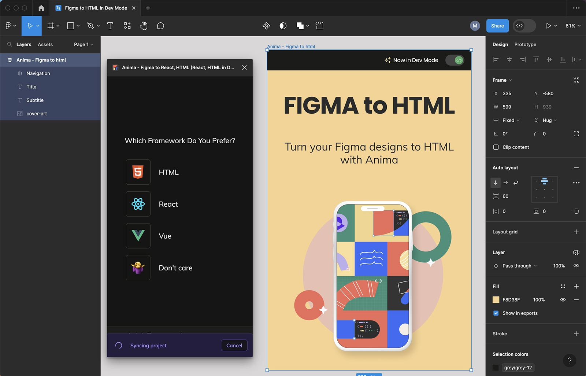

Uppercase
Mis on Uppercase vahendid
- Draw.io
- Github
- MS Office 365
Mille jaoks neid kasutatakse
(upper CASE tools) toetavad analüüsi ja projekteerimist. Peamiselt on nad kasutusel kasutajanõuete
analüüsimisel ja dokumenteerimisel. Nad on ennekõike mõeldud visualiseerimiseks, erinevate skeemide
koostamiseks ja ka dokumentatsiooni genereerimiseks. nad toetavad traditsiooniliste diagrammikeelte
kasutamist (olem-seos diagrammid, andmemudelid, UML-skeemid, jne).
Milliseid vahendeid olen ise juba kasutanud
2 näidet Uppercase/Lowercase vahendist mida veel kasutanud ei ole
tööriista programmi akna pilti
Figma:

Milanote:
mida tööriistaga teha saab
Figma:visualiseerida arhitektuuri.
Milanote:projektiplaani koostamine ja jälgimine.
Lingid
Info
Milanote
Figma